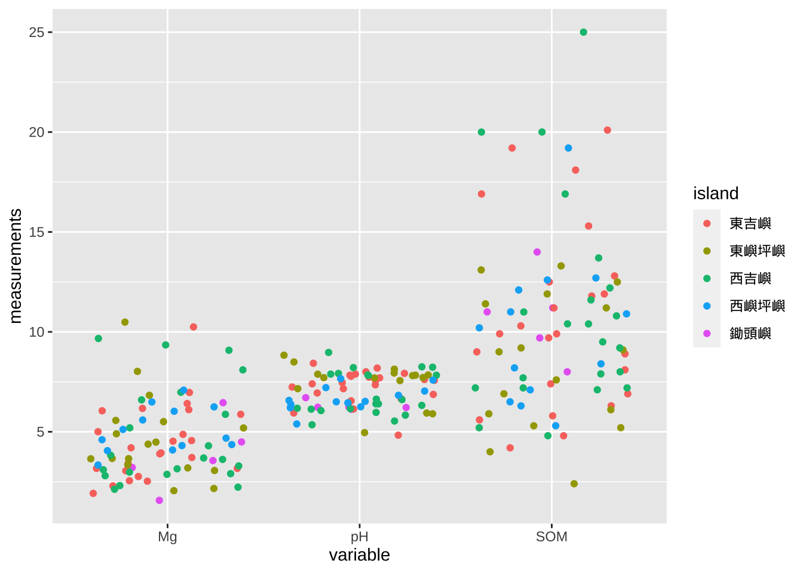

17 ggplot2 繪圖各論
1 2. 不同類型圖形的繪製
在決定採用何種圖之前，必須要了解資料的變數屬性，像是有幾個變數需要呈現、資料類型屬於連續變數(continuous variables)或是離散變數(discrete variables)。連續性的變數像是溫度、雨量、濕度等環境因子；離散性的變數則像是性別(雌、雄)、地形位置(稜線、上坡、中坡、下坡、谷地等)等。如果是單一連續變數，可以用直方圖(histogram)、多邊圖(frequency polygon plot)、點圖(dot plot)、面積圖(area map)或分位圖(quantile-quantile plot)等來繪製，呈現的方式則多以該變數數值出現的頻度(也就是次數)或是核密度估計(kernel density estimate)來呈現。下表1 列出常用的圖形與所需之變數數目、類型與 ggplot2 幾何元件之整理：
表1. 常用的圖形、變數數目、變數類型與 ggplot2 幾何元件比較
| 變數數目 | 變數類型 | 圖形類型 | ggplot2 幾何元件(geom_functions) | 解釋與適用資料 |
|---|---|---|---|---|
| 1 | 連續 | 直方圖 | geom_histogram() | 觀察數據分布的大致情況，應用在連續性的數值上 |
| 1 | 連續 | 多邊圖 | geom_freqpoly() | 觀察數據分布的大致情況，和直方圖很類似，只不過繪製成折線，適合疊加多個變數後比較 |
| 1 | 連續 | 點圖 | geom_dotplot() | 觀察數據分布的大致情況，和直方圖很類似，只不過以點來呈現 |
| 1 | 連續 | 核密度估計圖 | geom_density() | 觀察數據分布的大致情況，將直方圖轉換成折線方式呈現，使用機率密度的函數來計算繪製 |
| 1 | 連續 | 分位圖 | geom_qq(), geom_qq_line() | 適用於檢測數據分布是否常態 |
| 1 | 連續 | 盒鬚圖 | geom_boxplot() | 了解資料的分散狀況，可從盒鬚圖中觀察出中位數、四分位數和最大最小值 |
| 1 | 離散 | 柱狀圖/長條圖 | geom_bar() | 比較一個變量小規模的數據分析，適用於離散型資料 |
| 2 | 連續 | 散佈圖 | geom_point() | 將兩個變數以點呈現，可協助了解兩者之間有無關聯，可搭配 geom_smooth() |
| 2 | 連續 | 面積圖 | geom_area() | |
| 2 | 連續 | 折線圖 | geom_line() | 連續性的資料，把所有的點用線段連結起來，觀察x軸的變數序列上y的變化情形 |
| 2 | 連續 | 鬚軸圖 | geom_rug() | 在兩個軸上精簡表示兩個連續變數的圖，通常適合小資料集。 |
| 2 | 連續 | 平滑曲線圖 | geom_smooth() | 把所有的資料平滑化後繪製，一般協助觀察並找出資料的特徵 |
| 2 | 連續+離散 | 柱狀圖 | geom_col() | |
| 2 | 連續+離散 | 盒鬚圖 | geom_boxplot() | 了解資料的分散狀況，可從盒鬚圖中觀察出中位數、四分位數和最大最小值 |
| 2 | 連續+離散 | 提琴圖 | geom_violin() | 同時顯示數據分布和其機率密度，結合盒鬚圖和核密度估計圖 |
| 3 | 連續 | 等高線圖 | geom_contour(), geom_contour_fill() | GIS 地形高度資料 |
| 3 | 連續 | 影像網格(raster) | geom_raster() | 地圖資料，和 geom_tile() 與 geom_rect() 相同，當所有的圖磚大小相同時，繪製地圖的效率較 geom_tile() 或 geom_rect() 來得高 |
| 3 | 連續 | 圖磚 | geom_tile() , geom_rect() | 繪製矩形範圍，定義邊界(數值範圍四個角落, geom_rect)或圖磚大小(geom_tile)。通常使用作為地圖上或熱點圖(heatmap)的資料呈現 |
1.1 澎湖南方四島資料集
澎湖南方四島資料集是林政道在 2015 執行海洋國家公園管理處委託研究「澎湖南方四島植物相演替分析研究」所調查的資料集。我們會使用這個資料集來練習繪圖。
從 gist.github.com 讀取南方四島資料集的環境因子資料，我們使用 data.table::fread() 來讀取遠端的資料，R 程式碼如下：
1.2 直方圖(histogram)
ggplot2 幾何元件: geom_histogram()
繪製語法：
`stat_bin()` using `bins = 30`. Pick better value with `binwidth`.
aes 參數： x, y, alpha, color, fill, linetype, size, weight
出圖：

1.3 多邊圖(frequency polygon)
ggplot2 幾何元件: geom_freqpoly()
繪製語法：
`stat_bin()` using `bins = 30`. Pick better value with `binwidth`.aes 參數： x, y, alpha, color, fill, linetype, size, weight

1.4 點圖
ggplot2 幾何元件: geom_dotplot()
繪製語法：
Bin width defaults to 1/30 of the range of the data. Pick better value with `binwidth`.aes 參數： x, y, alpha, color, fill, linetype, size, weight

1.5 核密度估計圖
ggplot2 幾何元件: geom_density()
繪製語法：
aes 參數： x, y, alpha, color, fill, group, linetype, size, weight

1.6 分位數圖(Q-Q plot)
ggplot2 幾何元件: geom_qq() 及 geom_qq_line()
繪製語法：
aes 參數： x, y, alpha, color, fill, linetype, size, weight

也可以搭配 Q-Q line 來繪圖
繪製語法：
ggplot(data = sisland.env) +
geom_qq(mapping = aes(sample = SOM)) +
geom_qq_line(mapping = aes(sample = SOM))
1.7 盒鬚圖(boxplot)、提琴圖(violin plot)與區域散點圖(jitter points)
盒鬚圖、提琴圖和區域散點圖都是來描述資料分散的情形，可以從盒鬚圖上窺知中位數、第一四分位數、第三四分位數、最大值與最小值；提琴圖則是結合密度估計圖顯示；區域散點圖則是顯示所有的點位散佈位置，但僅適於小規模的資料集(數據很大難以閱讀，點都會疊在一起)。
1.7.1 盒鬚圖
ggplot2 幾何元件: geom_boxplot()
繪製語法：
aes 參數： x, y, alpha, color, fill, linetype, size, weight

1.7.2 多個變數繪製盒鬚圖放在一起
如果要在同一張圖中，放置多個變數，就得要先將資料處理過。我們澎湖南方四島的環境資料是屬於寬表(wide table)，要轉換成長表(long table)才能繪製。但請注意，因為是同一個 y 軸，如果資料範圍差異太大(比如說某個變數 var1 數值介於 0–1 之間，而 var2 變數則介於 \(10^4\) 至 \(10^6\) 之間，放在同一個 y 軸上，var1 會整個被壓縮成一條線)，排在同一張圖是沒什麼意義的。
寬表的概念
| 變數1 | 變數 2 | 變數 3 | 變數 4 |
|---|---|---|---|
| 量測值1 | 量測值4 | … | … |
| 量測值2 | 量測值5 | … | … |
| 量測值3 | 量測值6 | … | … |
| … | … | … | … |
長表的概念
| 變數名稱 | 量測值 |
|---|---|
| 變數1 | 量測值1 |
| 變數1 | 量測值2 |
| 變數1 | 量測值3 |
| 變數2 | 量測值4 |
| 變數2 | 量測值5 |
| 變數2 | 量測值6 |
| … | … |
| … | … |
| 變數4 | 量測值n |
將寬表轉換成長表可以使用 tidyverse 中 dplyr 套件的 gather() 函式，其語法如下(請複習 %>% pipeline 的用法)：
── Attaching packages ─────────────────────────────────────── tidyverse 1.3.1 ──✔ tibble 3.1.7 ✔ dplyr 1.0.8
✔ tidyr 1.2.0 ✔ stringr 1.4.0
✔ readr 2.1.2 ✔ forcats 0.5.1
✔ purrr 0.3.4 ── Conflicts ────────────────────────────────────────── tidyverse_conflicts() ──
✖ dplyr::between() masks data.table::between()
✖ dplyr::filter() masks stats::filter()
✖ dplyr::first() masks data.table::first()
✖ dplyr::lag() masks stats::lag()
✖ dplyr::last() masks data.table::last()
✖ purrr::transpose() masks data.table::transpose()sisland.env %>%
select(C, Mg, Na, SOM) %>% # 將南方四島資料集 C, Mg, Na, SOM 欄位取出
gather(key = 'variables', value = 'measurements') %>% # 轉成長表
ggplot(mapping = aes(variables, measurements)) + # 繪圖
geom_boxplot()
1.7.3 多個變數分組
另一個常常使用的案例是把多個盒鬚圖依照不同組別來比較。舉例來說，如果我們想比較南方四島中不同島嶼樣區土壤性質(SOM、pH和 Mg)含量，我們可以這樣繪製：
Loading required package: sysfontsLoading required package: showtextdbshowtext_auto()
sisland.env %>%
select(island, SOM, pH, Mg) %>%
# gather 所有變數，除了 island 之外(要當成獨立一個欄位，做為群組)
gather(key = 'variable', value = 'measurements', -island) %>%
# 以 variable (土壤性質，即 SOM, pH 和 Mg)為 x,
# measurements 為 y
# 依照 island (島嶼) 使用 fill 來分組
ggplot(mapping = aes(x = variable, y = measurements, fill = island)) +
# 繪製盒鬚圖，使用 position_dodge 調整間距
geom_boxplot(position = position_dodge(0.9)) +
# 修改 x 軸標籤為 Soil properties
labs(x = 'Soil properties') 
1.7.4 提琴圖(violin plot)
ggplot2 幾何元件: geom_violin()
繪製語法：
sisland.env %>%
select(island, SOM, pH, Mg) %>%
gather(key = 'variable', value = 'measurements', -island) %>%
ggplot(mapping = aes(x = variable, y = measurements)) +
geom_violin()aes 參數： x, y, alpha, color, fill, group, linetype, size, weight

1.7.5 區域散點圖(jittered plot)
ggplot2 幾何元件: geom_jitter()
繪製語法：
sisland.env %>%
select(island, SOM, pH, Mg) %>%
gather(key = 'variable', value = 'measurements', -island) %>%
ggplot(mapping = aes(x = variable, y = measurements, color = island)) +
geom_jitter()
aes 參數： x, y, alpha, color, fill, group, linetype, size, weight